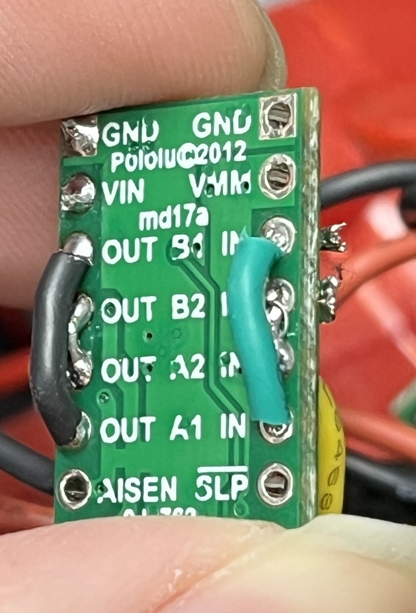
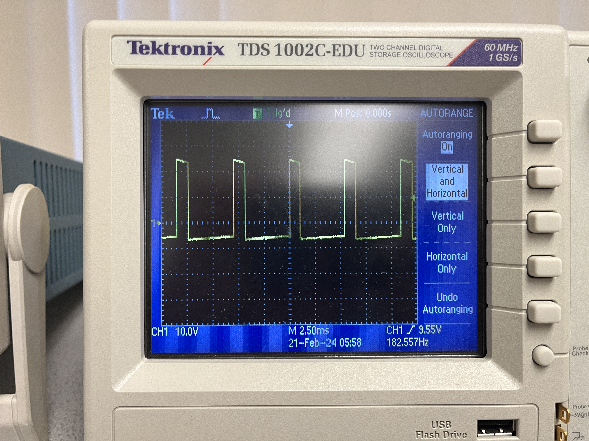
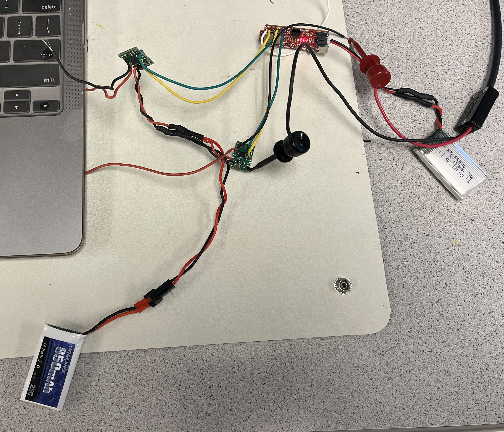

Lab 04: Motors and Open Loop Control
Objective
The goal of this lab is to start open loop control. We remove the control board in the car and replace it with our Artemis Board with the connected sensors. We add motor drivers to control the car motors from the artemis.
Prelab
Before we started to take apart the RC car, we had to determine which pins on the Artemis to use for the motor drivers. We decided to use pins 4, 5, 6, and 7 because they can send out PWM signals. We also decided to use 1 battery to power the motors and 1 battery to power the board. This was to prevent the power cables from introducing interferance from going across the robot. This was also to prevent the instantenous pull from the motors turning on impacting the board's functionality.
Parallel Motor Drivers
We decided that we need more current than a single channel from the motor driver could output. Because of this, we had to short the two channels together to double the current output. We do this on the same board to prevent different clock speeds from being an issue. Below is how we shorted the pins of the motor driver for the input and output pins.
Generating PWM Signals
We soldered the motor drivers to the Artemis board and then tested the outputs to ensure a PWM signal was being generated.
int motor1P = 4;
int motor1N = 5;
void setup(){
pinMode(motor1P, OUTPUT);
pinMode(motor1N, OUTPUT);
}
void loop(){
analogWrite(motor1P, 30);
}


Reassembling the RC Car
Next, we took apart the RC car and removed the circuit board. We then soldered the motor drivers to the Artemis and the motors to the motor drivers. After that, we arranged the general layout of the RC car with the Artemis board. We haven't finalized the location of the sensors yet.

We then tested that both motors could spin in both directions.
Driving the Car
After the car is assembled, we first tested the lower limit of the PWM signal that
would allow the car to move (and overcome the friction of tile floor). We found this value to be a write
value 55. We also noticed that the left motor (motor 2) was much weaker than the right one (at 50, the right
motor would spin, but the left one wouldn't).
After that, we calibrated the motors to ensure that they spin at the same rate so the car could drive
straight. This was done experimentally
by running the car and seeing if it drifts. We found the conversion factor to be:
int right = 0.8*left;
This may be incorrect due to the floor that we tested on, so this will be recalibrated in the lab. Here is a
video of the car driving relatively straight.
Finally, we demonstrate simple open loop control by having the car drive and turn.
void loop() {
delay(1000);
//go forwards
motor_forwards(motor1P, motor1N, speed);
motor_forwards(motor2P, motor2N, right_speed);
delay(1000);
//turn right
motor_forwards(motor1P, motor1N, speed);
motor_backwards(motor2P, motor2N, right_speed);
delay(500);
//go forwards
motor_forwards(motor1P, motor1N, speed);
motor_forwards(motor2P, motor2N, right_speed);
delay(1000);
//turn left
motor_forwards(motor2P, motor2N, right_speed);
motor_backwards(motor1P, motor1N, speed);
delay(500);
//go forwards
motor_forwards(motor1P, motor1N, speed);
motor_forwards(motor2P, motor2N, right_speed);
delay(1000);
//stop
motor_stop(motor1P, motor1N);
motor_stop(motor2P, motor2N);
delay(5000);
}